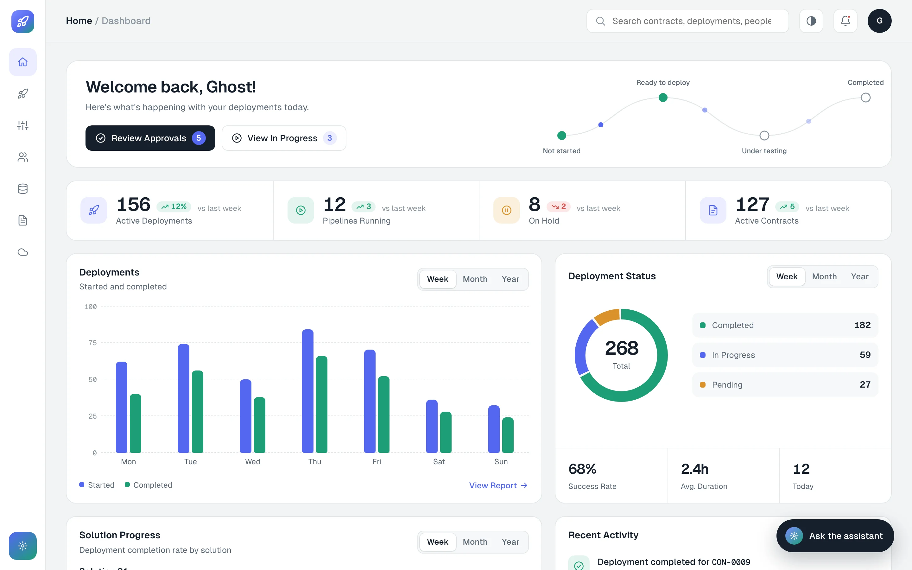

Deployment portal with an AI chat assistant
Deployments for a global energy technology client were tracked by hand. I designed the portal that replaced the spreadsheets, and the chat assistant that answers questions about any deployment.
The screens on this page are my own concept redesign of the portal, rebuilt with placeholder names and data. No client data, names or branding are shown.

A concept redesign of the portal's dashboard.
Before and after
- Deployments lived in Excel, SharePoint and other internal portals
- Someone updated each status manually
- No single place showed where every deployment stood
- Every deployment and its state on one dashboard
- A change of state triggers the next step
- Approvals and checks are built into the flow
How a deployment moves
Four states, start to finish. Pick a state to see what happens there.
The deployment has been created in the portal, but work on it hasn't begun. It sits in the list where the whole team can see it, so nothing is forgotten before it starts.
What I designed
Raw Excel and SharePoint data turned into one view of every deployment and where it stands.
Each deployment followed through its four states, from Not started to Completed.
When a state changes, an approver signs it off before the next step begins.
Admins add or remove people from the portal, and create the roles and groups that decide what each person can do.
Full access for admins, who see the entire picture across every deployment and every user.
A chat interface for asking about any deployment in plain language.
Inside the portal
Every contract and solution moves through the four states on one board, so engineers see what is waiting, what is late and who owns it.
Asking a deployment how it's doing
I designed the chat interface. The engineering team connected it to the AI behind it.
The part that needed the most care was what happens when the assistant can't help. It first asks the person to check their question. If the question was right and there is still nothing to find, it says so plainly.
Built for the whole life of a deployment
A deployment doesn't always run cleanly from start to finish. The portal keeps the difficult parts in view as well.
A deployment that takes longer than it should is visible on the dashboard, where before it was a row in a sheet that nobody had updated.
If a check fails and a deployment is rolled back, the error is recorded against that deployment, so the team can see what went wrong and where.
Threshold limits are tracked alongside the deployments, so the team knows when one is close before it becomes a problem.